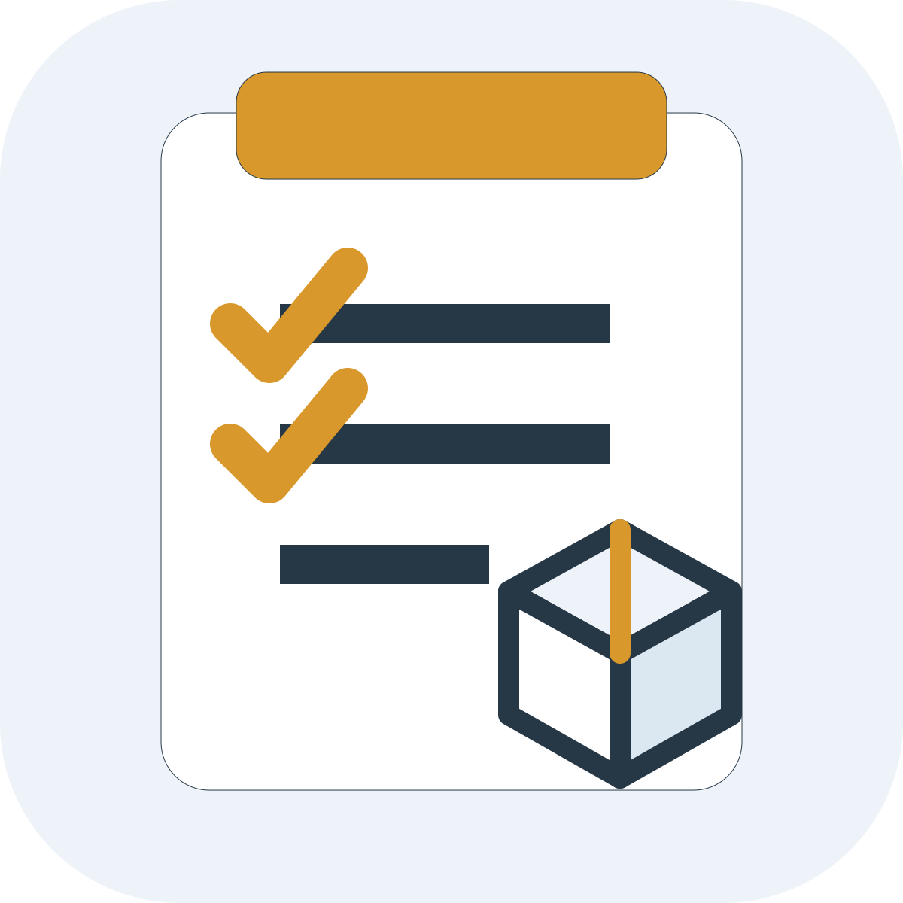
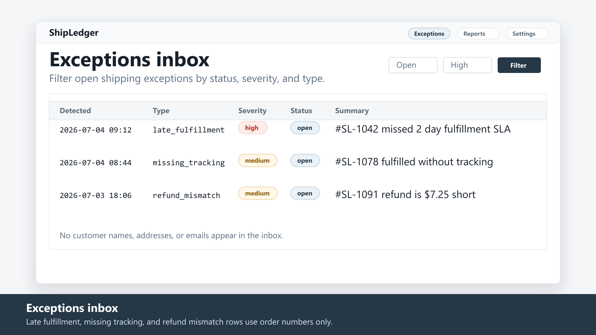
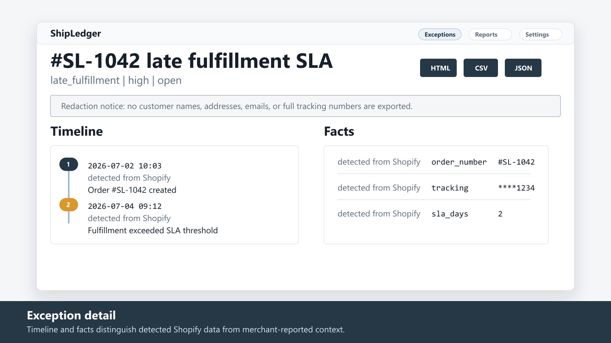
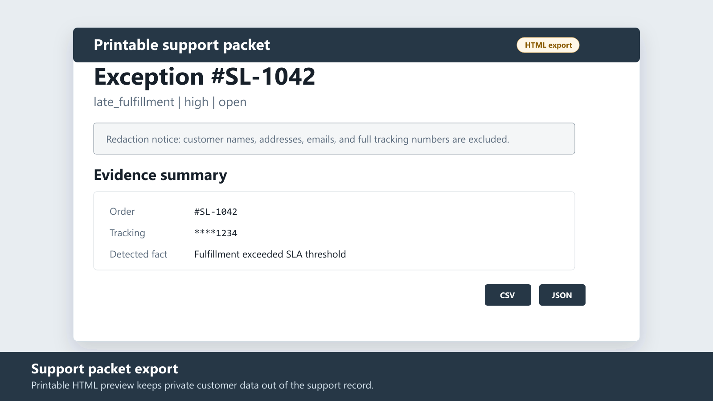
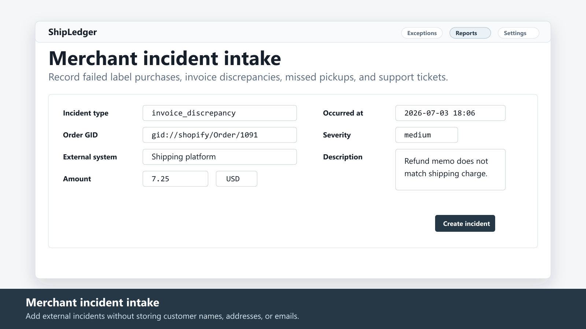
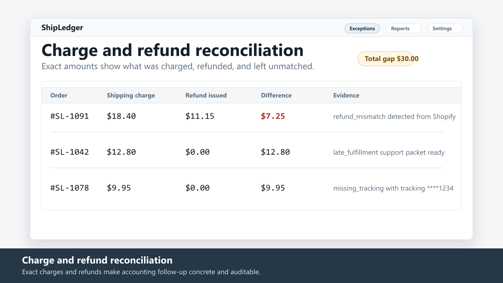

$12/month · 7-day free trial
ShipLedger Shipping Evidence
Log shipping exceptions and build support-ready evidence
ShipLedger watches Shopify orders and flags shipping exceptions automatically, with per-order timelines built from real events. Merchants can add reported incidents such as failed label purchases, invoice discrepancies, and missed pickups, then export a clean support packet as printable HTML, CSV, or JSON.
Coming to the Shopify App StoreWhat it does
- Auto-detected exceptions: late fulfillment, holds, missing or stale tracking
- Shipping charge vs refund reconciliation with exact amounts
- Merchant incident intake for label failures, invoice disputes, and missed pickups
- One-click support packet export as printable HTML, CSV, or JSON
- Privacy-first: no customer names, addresses, or emails are stored
Pricing
$12/month
7-day free trial. One focused plan for the features listed here.
Screenshots





FAQ
Does ShipLedger store customer addresses?
No. The implementation excludes customer name, email, phone, address, geolocation, and zip fields from storage and exports.
Are tracking numbers stored?
Full tracking numbers are not persisted. ShipLedger stores a mask, SHA-256 hash, and tracking URL host.
Can it create shipping labels or contact carriers?
No. It is a read-only diagnostic and evidence logging app for exception detection and support packet exports.
Which export formats are available?
Support packets export as printable HTML, CSV, and JSON.
Coming to the Shopify App Store
The store link will be added after app review approval.